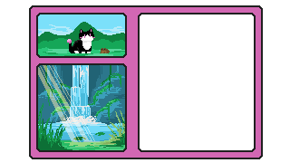

The toad doesn't seem very intent on moving far. It jumps into the grass and slowly lumbers towards the waterfall. You wonder if it will jump into the water, but as if by magic, it disappears behind the misty spray of the water. You come closer and realize there is a small gap between the waterfall and the damp rock. You slip in, finding yourself in a small open space, blocked by a curtain of water from the rest of the world. Somehow, it is quieter in here, the loud rushing of the water being reduced to a buzz in the background. The sun doesn't quite reach here, refracting only through falling droplets. It gives the alcove a gentle glow. Enough to see, but not enough to strain the eyes. The toad settles on the rock. It sizes you up for a moment, before answering some unknown question in its head. The toad closes its eyes and sleeps. You sit by its side, letting the rhythmic sounds of falling water and the dim lighting of the alcove lull you into a short slumber. When you wake, it is even darker. The toad is still sleeping, and you thank the guardian of the forest for sharing this space with you before departing. You realize the day is running short when the first streaks of orange and pink begin to paint the sky. Your adventure is almost at an end. You know where to go.